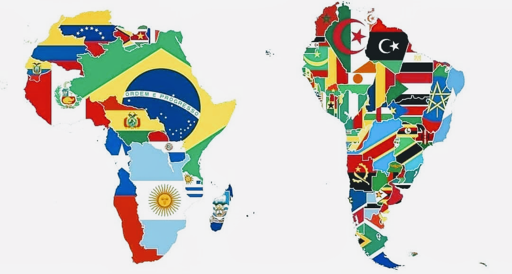
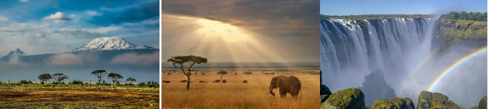

AMÉRICA DO SUL E ÁFRICA
|  | Comparar a África com a América do Sul envolve uma análise de suas características geográficas, culturais e econômicaS.
GEOGRAFIA
CULTURA E ETNIA
ECONOMIA
|
ÁFRICA
África é um dos seis continentes do mundo, sendo o terceiro maior em extensão territorial. O território estende-se por mais de 30 milhões de km², ocupando, aproximadamente, 20% da área continental da Terra. No continente vive mais de um bilhão de habitantes, fazendo dele o segundo mais populoso entre os demais.
A África é conhecida pela sua pluralidade étnica e cultural, e, por meio de uma história milenar, é capaz de contar a história de toda a humanidade. Apesar da enorme riqueza do continente, muitos países africanos apresentam baixos índices de desenvolvimento, com diversos problemas sociais, como a miséria, baixa qualidade de vida, subnutrição e o analfabetismo.
Saiba mais sobre a África
AMÉRICA DO SUL
Com uma extensão de cerca de 17,8 milhões de km², a América do Sul comporta 6% da população mundial dividida em 12 países e 7 territórios. São eles a Argentina, Bolívia, Brasil, Chile, Colômbia, Equador, Guiana, Paraguai, Peru, Suriname, Uruguai e Venezuela e, os territórios da Guiana Francesa, Ilha de Páscoa, Ilhas Galápagos, Ilhas Geórgia e Sandwich e Ilhas Malvinas. Limita-se ao norte com a América Central, à leste com o oceano atlântico e à oeste com o oceano pacífico.
Atravessado pela Linha do Equador e pelo Trópico de Capricórnio, o continente possui a segunda maior cordilheira do mundo na Região Andina que se estende desde a Venezuela até o Chile e a Argentina. No vale do Amazonas encontramos a maior bacia hidrográfica do mundo, e também, a região de maior biodiversidade: a floresta Amazônica. O clima tropical úmido garante alta densidade pluviométrica em toda a região que se situa entre a Linha do Equador e o Trópico de Capricórnio, com algumas exceções devido ao relevo.

Saiba mais sobre a America do Sul